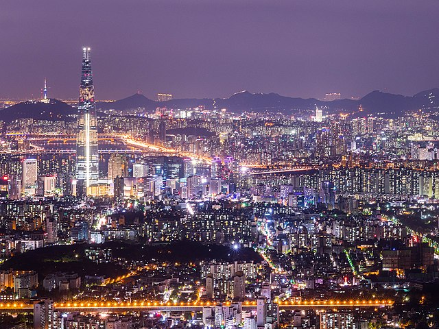
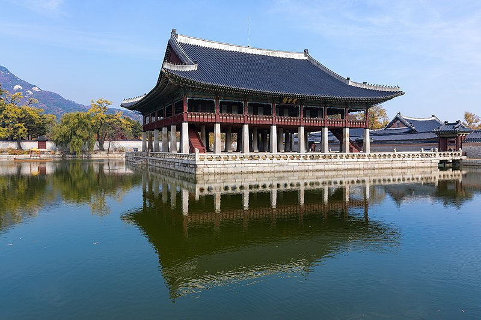
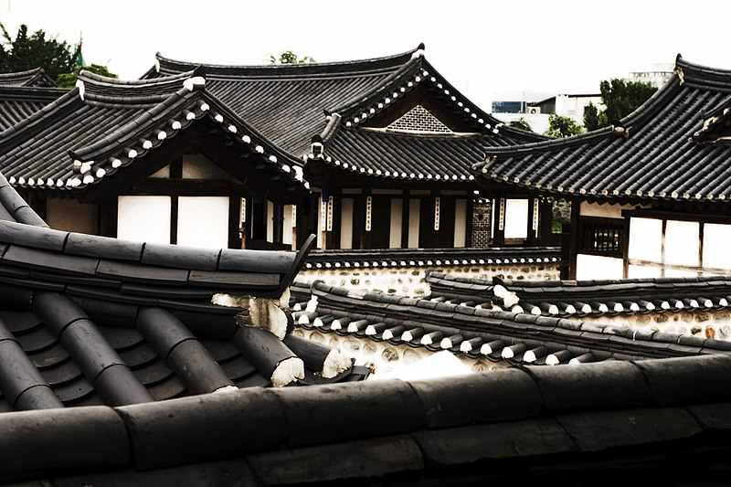

Ville de Séoul
Séoul la rayonnante
Séoul, la vibrante capitale de la Corée du Sud, est une métropole où se mêlent harmonieusement tradition et modernité. Avec une histoire riche de plus de 2 000 ans, Séoul est à la fois le cœur culturel et économique du pays, offrant une expérience urbaine captivante à ses visiteurs.
Au cœur de la ville se trouve le palais Gyeongbokgung, un magnifique complexe royal datant de la dynastie Joseon. Avec ses pavillons ornés, ses jardins paisibles et sa porte Gwanghwamun imposante, le palais Gyeongbokgung est un témoignage saisissant de l'ancienne grandeur de la Corée.
Mais Séoul ne se limite pas à ses quartiers modernes et animés. Les hanoks, des maisons traditionnelles coréennes, sont disséminées à travers la ville, offrant un contraste saisissant avec l'architecture contemporaine. Le village de Bukchon Hanok, avec ses ruelles pavées et ses maisons bien préservées, permet aux visiteurs de voyager dans le temps et de découvrir la vie quotidienne de l'époque Joseon.
Séoul est une ville en constante évolution, où le passé et le présent se rejoignent pour créer une expérience urbaine dynamique et captivante. Que ce soit pour explorer ses trésors historiques, se plonger dans sa scène culturelle bouillonnante ou savourer sa délicieuse cuisine, Séoul offre quelque chose pour chacun de ses visiteurs.
Découvrir plus sur l'Asie